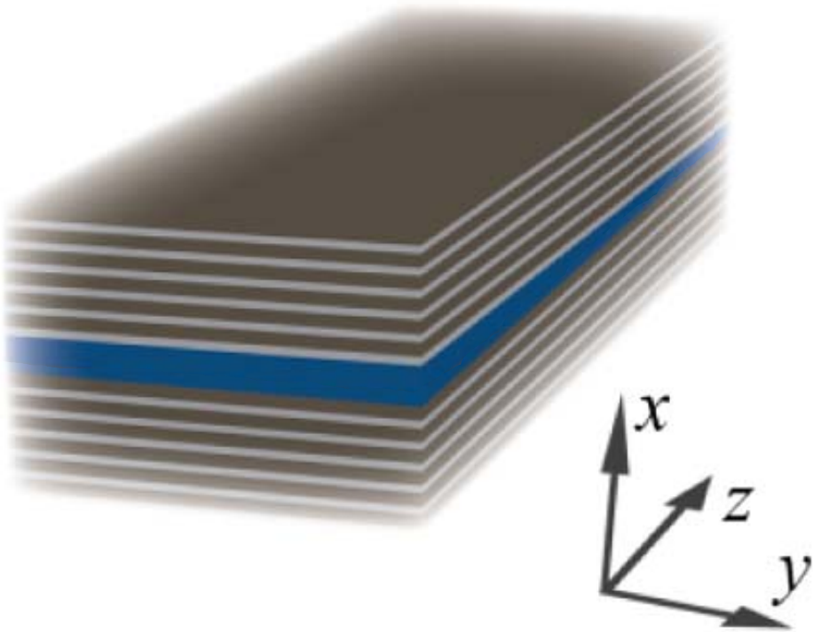
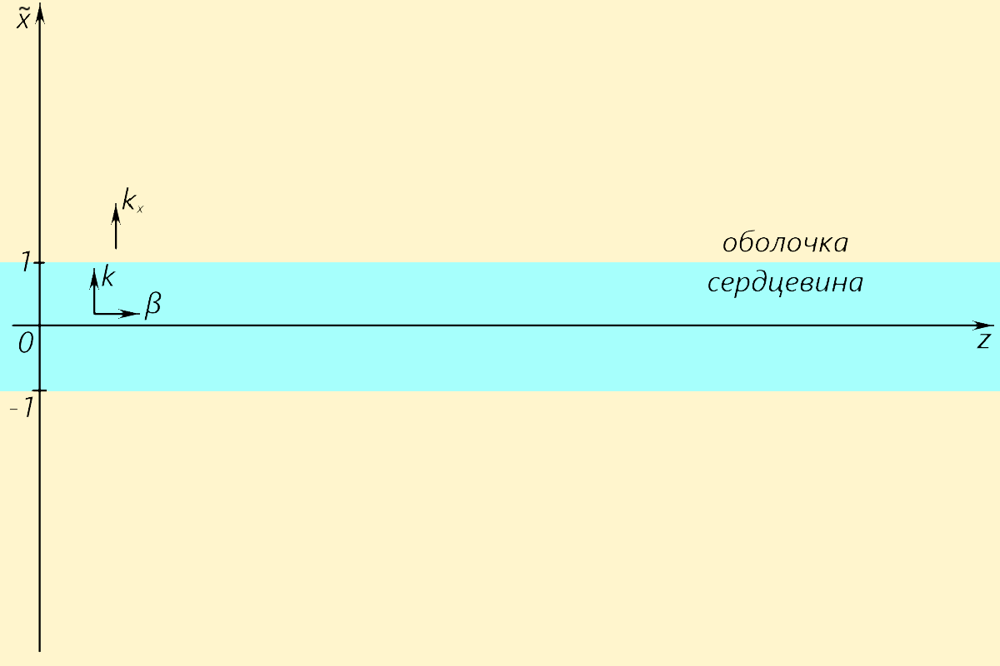
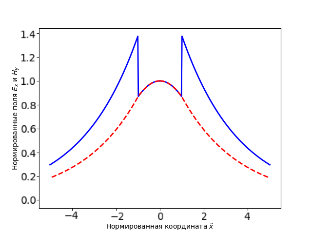
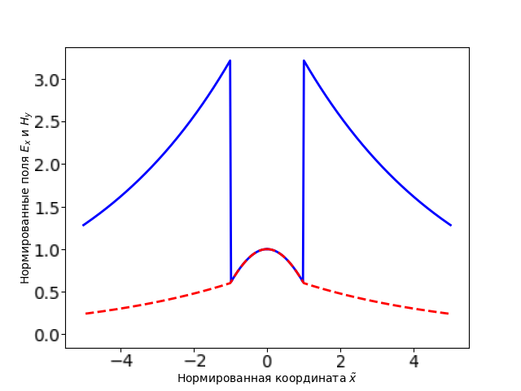

Y22 (2022) — English translation
In recent years, photonic technologies have played an increasingly important role in circuit design. They allow you to achieve high speeds and quality of information transmission and processing. The main device for transmitting light is a waveguide - a system consisting of a core through which the wave travels and a shell that restrains the light from escaping outward using the effect of total internal reflection. Unfortunately, when moving to subdiffraction scales, a new problem arises - in waveguides, the size of which is small compared to the wavelength, the radiation becomes very difficult to contain inside, which leads to large power losses and possible wave transfer between adjacent waveguides. As one of the solutions to this problem, it is proposed to use so-called anisotropic waveguides, which consist of completely transparent dielectric materials in which anisotropy is observed, i.e. the connection between the fields $\vec D$ and $\vec E$ in them is written in form:\[D_x=\varepsilon_{x}E_x+\varepsilon_{xy}E_y+\varepsilon_{zx}E_z\\D_y=\varepsilon_{xy}E_x+\var epsilon_{y}E_y+\varepsilon_{yz}E_z\\D_z=\varepsilon_{zx}E_x+\varepsilon_{yz}E_y+\varepsilon_{z}E_z\]
In recent years, photonic technologies have played an increasingly important role in circuit design. They allow you to achieve high speeds and quality of information transmission and processing. The main device for transmitting light is a waveguide - a system consisting of a core through which the wave travels and a shell that restrains the light from escaping outward using the effect of total internal reflection. Unfortunately, when moving to subdiffraction scales, a new problem arises - in waveguides, the size of which is small compared to the wavelength, the radiation becomes very difficult to contain inside, which leads to large power losses and possible wave transfer between adjacent waveguides. As one of the solutions to this problem, it is proposed to use so-called anisotropic waveguides, which consist of completely transparent dielectric materials in which anisotropy is observed, i.e. the connection between the fields $\vec D$ and $\vec E$ in them is written in form:\[D_x=\varepsilon_{x}E_x+\varepsilon_{xy}E_y+\varepsilon_{zx}E_z\\D_y=\varepsilon_{xy}E_x+\var epsilon_{y}E_y+\varepsilon_{yz}E_z\\D_z=\varepsilon_{zx}E_x+\varepsilon_{yz}E_y+\varepsilon_{z}E_z\]

where $\varepsilon_{x}$, $\varepsilon_{y}$, $\varepsilon_{z}$, $\varepsilon_{yz}$, $\varepsilon_{zx}$ and $\varepsilon_{xy}$ are some quantities. As you will see later, sometimes this can actually significantly improve the performance of waveguides. It is proposed to manufacture anisotropic waveguides using the following technology. The core of the waveguide is made of an isotropic material, in this problem it is silicon $\rm Si$ (its refractive index is $n_\mathrm{Si}=3.47$, therefore $\varepsilon=n_\mathrm{Si}^2=12.04$). To fabricate the cladding of anisotropic waveguides, it is proposed to use a layered nanostructure, shown in Figure 1. The cladding consists of a sequence of alternating thin nanofilms of two different materials, in this problem germanium $\rm Ge$ and silicon dioxide $\rm SiO_2$ (their refractive indices $n_\mathrm{Ge}=4.3$ and $n_\mathrm{SiO_2}=1.5$, respectively). Theoretically, it can be shown that such a medium has anisotropic properties. The layered structure is characterized by a volume fraction $\rho$ of material with a higher dielectric constant, i.e. Germany. In the coordinate system introduced in Figure 2, the quantities $\varepsilon_{yz}$, $\varepsilon_{zx}$ and $\varepsilon_{xy}$ are equal to zero, and \[\begin{cases}\varepsilon_x=\left(\frac{\rho}{ \varepsilon_1}+\frac{1-\rho}{\varepsilon_2}\right)^{-1}\\\varepsilon_z=\varepsilon_1\rho+\varepsilon_2(1-\rho)\end{cases}\]In this case, $\varepsilon_1=n_\mathrm{Ge}^2=18.49$ and $\varepsilon_2=n_\mathrm{SiO_2}^2=2.25$.
where $\varepsilon_{x}$, $\varepsilon_{y}$, $\varepsilon_{z}$, $\varepsilon_{yz}$, $\varepsilon_{zx}$ and $\varepsilon_{xy}$ are some quantities. As you will see later, sometimes this can actually significantly improve the performance of waveguides. It is proposed to manufacture anisotropic waveguides using the following technology. The core of the waveguide is made of an isotropic material, in this problem it is silicon $\rm Si$ (its refractive index is $n_\mathrm{Si}=3.47$, therefore $\varepsilon=n_\mathrm{Si}^2=12.04$). To fabricate the cladding of anisotropic waveguides, it is proposed to use a layered nanostructure, shown in Figure 1. The cladding consists of a sequence of alternating thin nanofilms of two different materials, in this problem germanium $\rm Ge$ and silicon dioxide $\rm SiO_2$ (their refractive indices $n_\mathrm{Ge}=4.3$ and $n_\mathrm{SiO_2}=1.5$, respectively). Theoretically, it can be shown that such a medium has anisotropic properties. The layered structure is characterized by a volume fraction $\rho$ of material with a higher dielectric constant, i.e. Germany. In the coordinate system introduced in Figure 2, the quantities $\varepsilon_{yz}$, $\varepsilon_{zx}$ and $\varepsilon_{xy}$ are equal to zero, and \[\begin{cases}\varepsilon_x=\left(\frac{\rho}{ \varepsilon_1}+\frac{1-\rho}{\varepsilon_2}\right)^{-1}\\\varepsilon_z=\varepsilon_1\rho+\varepsilon_2(1-\rho)\end{cases}\]In this case, $\varepsilon_1=n_\mathrm{Ge}^2=18.49$ and $\varepsilon_2=n_\mathrm{SiO_2}^2=2.25$.

In the problem we will consider waves propagating along the waveguide along the $z$ axis and having only one non-zero magnetic field component – $H_y$. The vacuum wavelength $\lambda_0$ is assumed to be fixed throughout the problem, and the waveguide width is denoted $2a\lambda_0$. It is easy to show that the spatial amplitude of the magnetic field in such a wave should have the form:\[H_y=\left\{\begin{array}{ll}A\cos\left(kx\right)e^{i\beta z},&|x| < a\lambda_0\\Be^{-k_xx}e^{i\beta z},&|x|\geq a\lambda_0\end{array}\right.\]where $A$ and $B$ are constants determined from the boundary conditions, $k$ and $\beta$ -- $x$- and $z$-components of the wave vector in the core of the waveguide, and $k_x$ is the imaginary part of the $x$-component of the wave vector in the cladding. To simplify further work, we introduce the following dimensionless quantities: $v\equiv ak\lambda_0$, $w\equiv ak_x\lambda_0$ and $\tilde x\equiv\frac{x}{a\lambda_0}$. Then the expression for the magnetic field will be written in the form:\[H_y=\left\{\begin{array}{ll}A\cos\left(v\tilde x\right)e^{i\beta z},&|\tilde x| < 1\\Be^{-w\tilde x}e^{i\beta z},&|\tilde x|\geq1\end{array}\right.\]From here it is easy to derive an expression for the $x$-component of the electric field in waveguide:\[E_x=\frac{\beta}{\omega\varepsilon_0}\left\{\begin{array}{ll}\frac A{\varepsilon}\cos\left(v\tilde x\right)e^{i\beta z},&|\tilde x| < 1\\\frac B{\varepsilon_x}e^{-w\tilde x}e^{i\beta z},&|\tilde x|\geq1\end{array}\right.\]where $\omega$ is the cyclic frequency of the radiation transmitted through the waveguide.
In the problem we will consider waves propagating along the waveguide along the $z$ axis and having only one non-zero magnetic field component – $H_y$. The vacuum wavelength $\lambda_0$ is assumed to be fixed throughout the problem, and the waveguide width is denoted $2a\lambda_0$. It is easy to show that the spatial amplitude of the magnetic field in such a wave should have the form:\[H_y=\left\{\begin{array}{ll}A\cos\left(kx\right)e^{i\beta z},&|x| < a\lambda_0\\Be^{-k_xx}e^{i\beta z},&|x|\geq a\lambda_0\end{array}\right.\]where $A$ and $B$ are constants determined from the boundary conditions, $k$ and $\beta$ -- $x$- and $z$-components of the wave vector in the core of the waveguide, and $k_x$ is the imaginary part of the $x$-component of the wave vector in the cladding. To simplify further work, we introduce the following dimensionless quantities: $v\equiv ak\lambda_0$, $w\equiv ak_x\lambda_0$ and $\tilde x\equiv\frac{x}{a\lambda_0}$. Then the expression for the magnetic field will be written in the form:\[H_y=\left\{\begin{array}{ll}A\cos\left(v\tilde x\right)e^{i\beta z},&|\tilde x| < 1\\Be^{-w\tilde x}e^{i\beta z},&|\tilde x|\geq1\end{array}\right.\]From here it is easy to derive an expression for the $x$-component of the electric field in waveguide:\[E_x=\frac{\beta}{\omega\varepsilon_0}\left\{\begin{array}{ll}\frac A{\varepsilon}\cos\left(v\tilde x\right)e^{i\beta z},&|\tilde x| < 1\\\frac B{\varepsilon_x}e^{-w\tilde x}e^{i\beta z},&|\tilde x|\geq1\end{array}\right.\]where $\omega$ is the cyclic frequency of the radiation transmitted through the waveguide.

The central task in modeling waveguides is the numerical solution of Maxwell's equations. For the waveguide under consideration, this task is not particularly difficult and reduces to finding $v$ and $w$ from the following system equations:\[\begin{cases}w=\frac{\varepsilon_z}{\varepsilon}v\operatorname{tg}v\\v^2+\frac{\varepsilon_x}{\varepsilon_z}w^2=4\pi^2a^2(\varepsilon-\varepsilon_x)\end{cases}\]obtained from expressions for the field taking into account boundary conditions. Note: When solving the problem, give answers for $\varepsilon_x$, $\rho$ and $\varepsilon_z$ with an accuracy of two decimal places, all other quantities - with an accuracy of three decimal places. When making calculations, maintain sufficient precision so that intermediate rounding does not affect the final result.
The central task in modeling waveguides is the numerical solution of Maxwell's equations. For the waveguide under consideration, this task is not particularly difficult and boils down to finding $v$ and $w$ from the following system equations:\[\begin{cases}w=\frac{\varepsilon_z}{\varepsilon}v\operatorname{tg}v\\v^2+\frac{\varepsilon_x}{\varepsilon_z}w^2=4\pi^2a^2(\varepsilon-\varepsilon_x)\end{cases}\]obtained from expressions for the field taking into account boundary conditions. Note: When solving the problem, give answers for $\varepsilon_x$, $\rho$ and $\varepsilon_z$ with an accuracy of two decimal places, all other quantities - with an accuracy of three decimal places. When making calculations, maintain sufficient precision so that intermediate rounding does not affect the final result.

The main feature of the anisotropic waveguides under consideration is the rapid attenuation of the $x$-component of the electric field. In this part of the problem, you are asked to calculate some characteristics along the $E_x$ profile for two different waveguides of the same size. We will consider profiles $E_x$ for two waveguides with $a=0.1$ and different values of $\rho$. The table in the answer sheet shows the dependences of the $x$-field component on the $\tilde x$ coordinate, normalized to the $E_x$ value at the center.
As already indicated in the introduction, the location of waveguides at a small distance from each other can lead to the fact that a wave from one waveguide can move to another. To prevent this from happening, it is important that as much of the transmitted radiation power as possible passes through the core. On large scales, anisotropic waveguides are inferior in this indicator, but on small scales they show high efficiency compared to conventional ones. In this part of the problem, you will have to test this statement yourself and evaluate the scale at which anisotropic waveguides become effective. Let us denote the power transferred through a unit of transverse length of the waveguide core as $P_\mathrm{core}$, and the same indicator for the entire waveguide as $P_\mathrm{total}$.
In the answer sheet you are given a table containing the values of $a$ for which it is planned to manufacture anisotropic waveguides with $\rho=0.80$ and conventional waveguides (with the same core material; their cladding consists of pure $\rm SiO_2$).
Source: https://pho.rs/p/2842